گلهای شاخهای
گل رز قرمز
Red Rose
گل رز قرمز یکی از محبوبترین گلها برای هدیه دادن در مناسبتهای عاشقانه، تولد و سالگرد است. رنگ قرمز این گل نمادی از عشق و علاقه بوده و ظاهر زیبای آن باعث شده است همیشه انتخابی خاص باشد.
رنگ
قرمزنوع محصول
گل طبیعیتعداد شاخه
12 شاخهمناسب برای
هدیه و مناسبتهاافزودن محصول به سبد خرید در این پروژه بهصورت نمایشی است.
راهنمای نگهداری گل رز
با رعایت نکات زیر، گل رز مدت بیشتری تازه میماند.
نور مناسب
گل را در محیط روشن و دور از نور مستقیم خورشید قرار دهید.
تعویض آب
آب گلدان را هر یک تا دو روز یکبار تعویض کنید.
برش ساقه
انتهای ساقه را بهصورت مورب و با قیچی تمیز برش دهید.
دمای محیط
گل رز را در محیط خنک و دور از وسایل گرمایشی نگهداری کنید.

گلهای شاخهای
گل لاله زرد
Yellow Tulip
گل لاله زرد با رنگ روشن و ظاهر شاد، انتخاب مناسبی برای تبریک، هدیه دادن و تزئین منزل است. این گل فضای محیط را روشنتر و دلنشینتر نشان میدهد.
رنگ
زردنوع محصول
گل طبیعیتعداد شاخه
10 شاخهمناسب برای
تبریک و تزئین منزلافزودن محصول به سبد خرید در این پروژه بهصورت نمایشی است.
راهنمای نگهداری گل لاله
با مراقبت مناسب، گل لاله ظاهر شاداب خود را حفظ میکند.
محیط خنک
گل لاله را در محیط خنک و دور از گرمای زیاد قرار دهید.
آب تمیز
آب گلدان را بهطور مرتب تعویض کنید.
نور غیرمستقیم
گل را در نور ملایم و غیرمستقیم نگهداری کنید.
برش ساقه
انتهای ساقهها را کمی کوتاه کنید تا جذب آب بهتر شود.
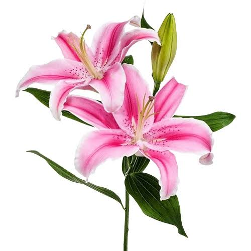
گلهای شاخهای
گل سوسن صورتی
Pink Lily
گل سوسن صورتی با گلبرگهای زیبا و رنگ لطیف، انتخابی مناسب برای هدیه دادن و تزئین محیط است. ظاهر ظریف این گل، حس آرامش و زیبایی را به فضای منزل منتقل میکند.
رنگ
صورتینوع محصول
گل طبیعیتعداد شاخه
8 شاخهمناسب برای
هدیه و دکور منزلافزودن محصول به سبد خرید در این پروژه بهصورت نمایشی است.
راهنمای نگهداری گل سوسن
رعایت چند نکته ساده باعث افزایش ماندگاری گل سوسن میشود.
نور ملایم
گل را در محیط روشن و دور از نور مستقیم خورشید قرار دهید.
تعویض آب
برای تازگی بیشتر، آب گلدان را مرتب عوض کنید.
حذف برگها
برگهایی را که داخل آب قرار میگیرند جدا کنید.
دمای مناسب
گل را دور از وسایل گرمایشی و جریان مستقیم باد نگهداری کنید.
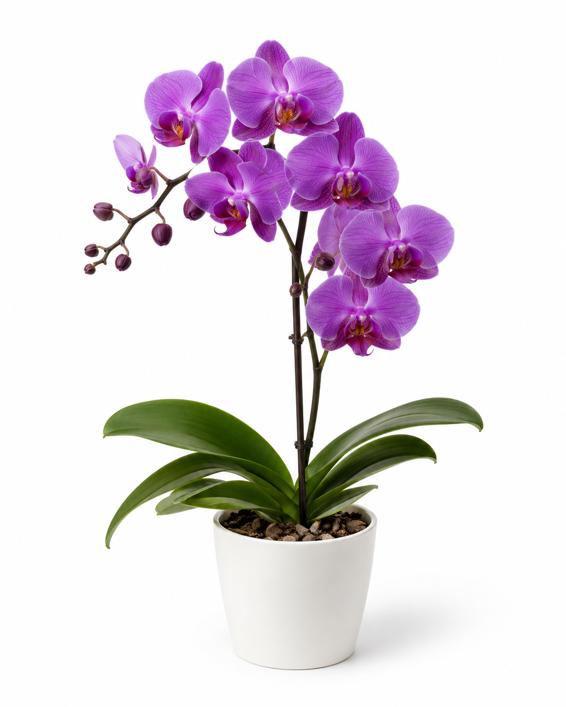
گلهای خاص
گل ارکیده بنفش
Purple Orchid
گل ارکیده بنفش با ظاهر خاص و رنگ چشمنواز، انتخابی لوکس برای هدیه دادن و تزئین منزل یا محل کار است. این گل بهدلیل ظاهر متفاوت خود جلوهای خاص به محیط میبخشد.
رنگ
بنفشنوع محصول
گل طبیعیتعداد شاخه
6 شاخهمناسب برای
هدیه و دکوراسیونافزودن محصول به سبد خرید در این پروژه بهصورت نمایشی است.
راهنمای نگهداری گل ارکیده
گل ارکیده برای حفظ زیبایی خود به مراقبت منظم نیاز دارد.
نور غیرمستقیم
ارکیده را در محیط روشن و دور از نور مستقیم قرار دهید.
آبیاری مناسب
از آبیاری بیش از حد خودداری کنید.
دمای متعادل
گل را در دمای متعادل و دور از سرمای شدید نگهداری کنید.
رطوبت مناسب
رطوبت ملایم محیط برای نگهداری ارکیده مناسب است.
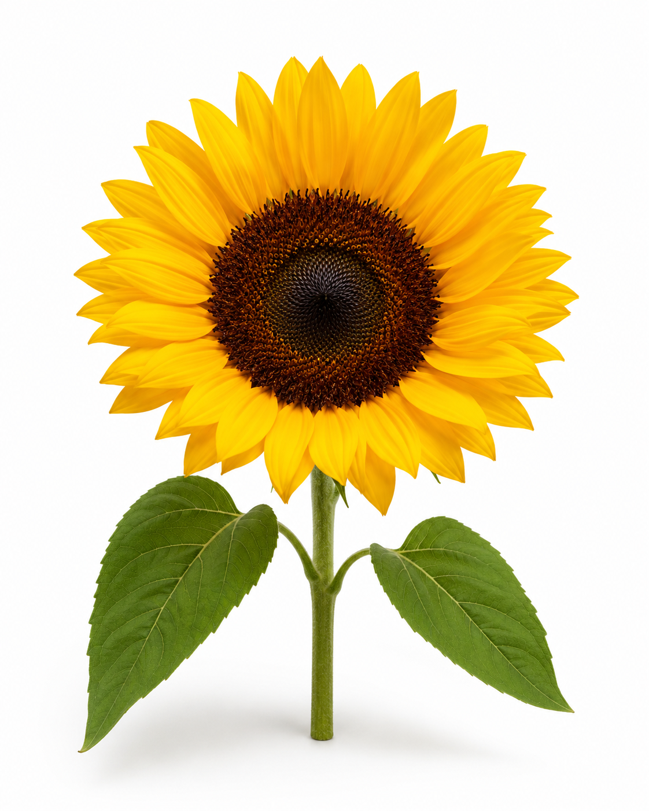
گلهای شاخهای
گل آفتابگردان
Sunflower
گل آفتابگردان با رنگ زرد روشن و ظاهر پرانرژی، فضای محیط را شادتر میکند. این گل برای هدیه دادن، دکور منزل و مناسبتهای دوستانه انتخاب مناسبی است.
رنگ
زردنوع محصول
گل طبیعیتعداد شاخه
8 شاخهمناسب برای
تبریک و دکورافزودن محصول به سبد خرید در این پروژه بهصورت نمایشی است.
راهنمای نگهداری گل آفتابگردان
برای حفظ تازگی گل آفتابگردان نکات زیر را رعایت کنید.
آب کافی
آفتابگردان به آب کافی و تمیز نیاز دارد.
برش ساقه
انتهای ساقه را هر چند روز یکبار کوتاه کنید.
محیط روشن
گل را در محیط روشن و دور از آفتاب شدید قرار دهید.
گلدان مناسب
از گلدان بلند و مقاوم برای نگهداری ساقهها استفاده کنید.
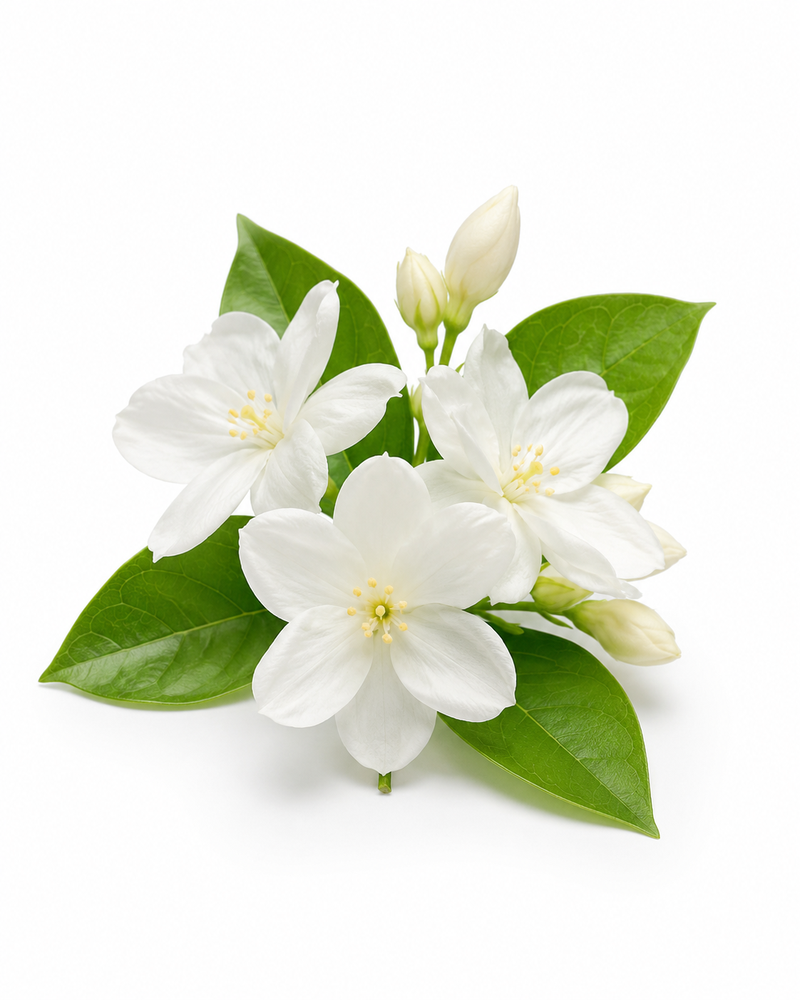
گلهای معطر
گل یاس سفید
Jasmine
گل یاس سفید با عطر دلنشین و ظاهر ظریف خود، انتخابی مناسب برای تزئین منزل و ایجاد فضایی آرامشبخش است. رنگ سفید آن نمادی از پاکی و آرامش محسوب میشود.
رنگ
سفیدنوع محصول
گل معطرتعداد شاخه
15 شاخهمناسب برای
منزل و هدیهافزودن محصول به سبد خرید در این پروژه بهصورت نمایشی است.
راهنمای نگهداری گل یاس
گل یاس برای حفظ عطر و تازگی خود به مراقبت مناسب نیاز دارد.
نور ملایم
گل را در نور روشن و غیرمستقیم قرار دهید.
آب تازه
آب گلدان را هر روز یا یک روز در میان تعویض کنید.
دمای خنک
دمای خنک باعث افزایش ماندگاری گل یاس میشود.
حذف گلهای خشک
گلهای خشکشده را از شاخهها جدا کنید.
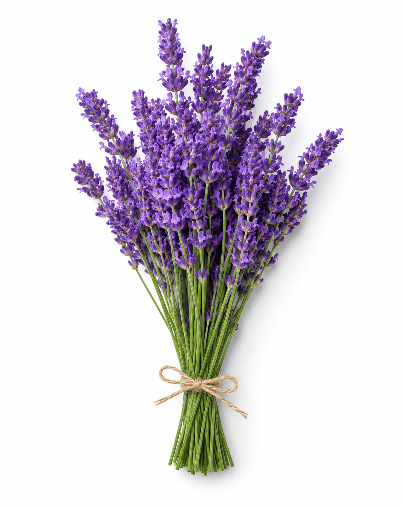
گلهای معطر و تزئینی
گل اسطوخودوس
Lavender
گل اسطوخودوس با رنگ بنفش و عطر آرامشبخش، انتخابی مناسب برای تزئین اتاق، میز کار و هدیه دادن است. ظاهر خاص آن به محیط حس آرامش و زیبایی میبخشد.
رنگ
بنفشنوع محصول
گل معطرتعداد شاخه
12 شاخهمناسب برای
دکور و هدیهافزودن محصول به سبد خرید در این پروژه بهصورت نمایشی است.
راهنمای نگهداری گل اسطوخودوس
نکات زیر به حفظ ظاهر و عطر اسطوخودوس کمک میکنند.
نور کافی
اسطوخودوس را در محیط روشن قرار دهید.
آب کم
از قرار گرفتن طولانی ساقهها در آب زیاد خودداری کنید.
هوای خشک
محیط خشک و دارای جریان ملایم هوا مناسب است.
خشککردن
میتوان شاخهها را برای استفاده تزئینی خشک کرد.
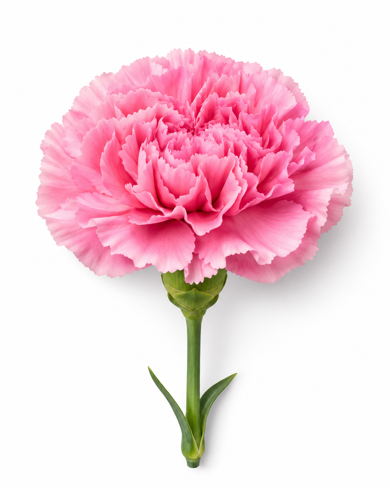
گلهای شاخهای
گل میخک صورتی
Carnation
گل میخک صورتی با گلبرگهای زیبا و رنگ ملایم، برای دستهگل، هدیه و تزئین محیط مناسب است. این گل نسبت به بسیاری از گلهای شاخهای ماندگاری خوبی دارد.
رنگ
صورتینوع محصول
گل طبیعیتعداد شاخه
14 شاخهمناسب برای
دستهگل و هدیهافزودن محصول به سبد خرید در این پروژه بهصورت نمایشی است.
راهنمای نگهداری گل میخک
با نگهداری مناسب، گل میخک مدت بیشتری تازه میماند.
آب تمیز
آب گلدان را هر دو روز یکبار تعویض کنید.
برش مورب
ساقهها را بهصورت مورب کوتاه کنید.
دمای خنک
گل را در محیط خنک نگهداری کنید.
حذف برگها
برگهای داخل آب را جدا کنید.
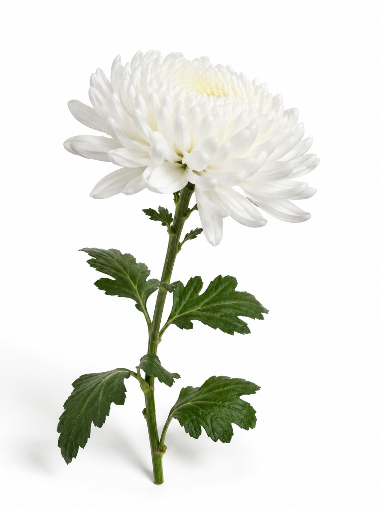
گلهای شاخهای
گل داوودی سفید
Chrysanthemum
گل داوودی سفید با گلبرگهای پر و ظاهر زیبا، برای تزئین منزل، دستهگل و مناسبتهای مختلف مناسب است. رنگ سفید آن حس آرامش و سادگی را منتقل میکند.
رنگ
سفیدنوع محصول
گل طبیعیتعداد شاخه
10 شاخهمناسب برای
تزئین و مناسبتهاافزودن محصول به سبد خرید در این پروژه بهصورت نمایشی است.
راهنمای نگهداری گل داوودی
گل داوودی با مراقبت مناسب ماندگاری خوبی خواهد داشت.
آب کافی
سطح آب گلدان را مرتب بررسی کنید.
نور ملایم
گل را در نور غیرمستقیم قرار دهید.
حذف گل خشک
گلبرگهای خشک و آسیبدیده را جدا کنید.
دمای مناسب
محیط خنک و دور از گرمای زیاد مناسب است.
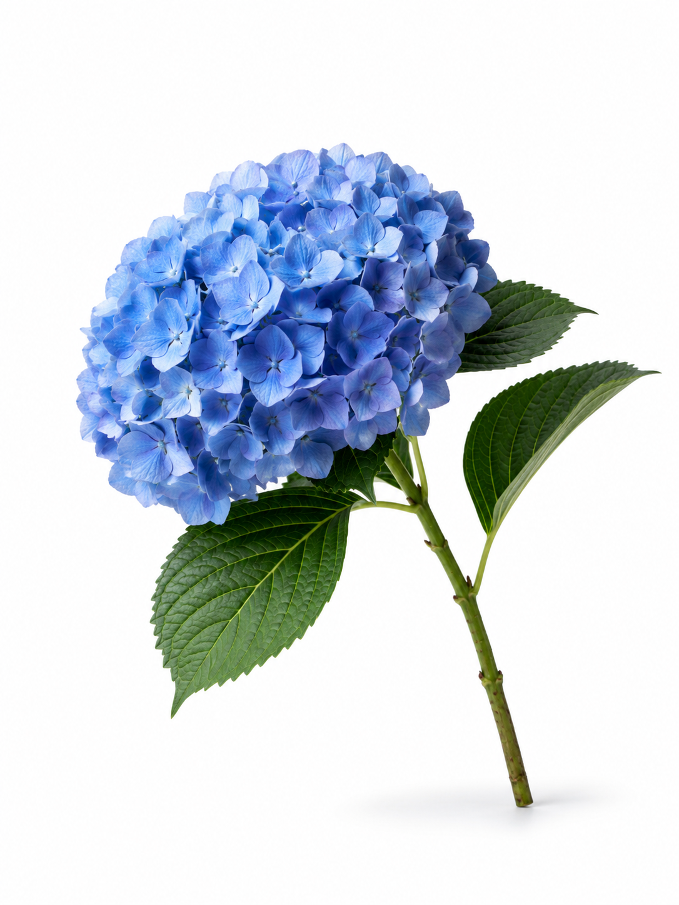
گلهای خاص و تزئینی
گل ادریسی آبی
Hydrangea
گل ادریسی آبی با گلبرگهای متراکم و رنگ خاص، انتخابی زیبا برای دکوراسیون و هدیههای خاص است. این گل ظاهر حجیم و چشمنوازی دارد و جلوهای متفاوت به محیط میبخشد.
رنگ
آبینوع محصول
گل طبیعیتعداد شاخه
5 شاخهمناسب برای
دکور و هدیه خاصافزودن محصول به سبد خرید در این پروژه بهصورت نمایشی است.
راهنمای نگهداری گل ادریسی
گل ادریسی برای حفظ ظاهر خود به آب کافی نیاز دارد.
آب فراوان
سطح آب گلدان را مرتب بررسی کنید.
نور غیرمستقیم
گل را دور از نور شدید خورشید قرار دهید.
محیط خنک
دمای خنک باعث افزایش ماندگاری گل میشود.
برش ساقه
انتهای ساقه را با زاویه مناسب کوتاه کنید.
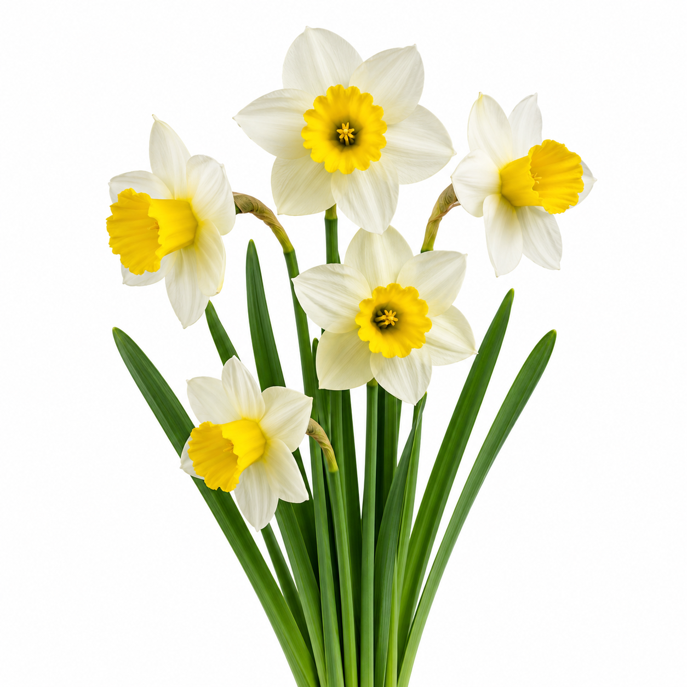
گلهای فصلی
گل نرگس
Daffodil
گل نرگس با ترکیب رنگ سفید و زرد و عطر دلنشین، یکی از گلهای محبوب فصلهای سرد است. این گل برای هدیه و تزئین منزل انتخابی ساده و زیبا محسوب میشود.
رنگ
سفید و زردنوع محصول
گل معطرتعداد شاخه
12 شاخهمناسب برای
هدیه و منزلافزودن محصول به سبد خرید در این پروژه بهصورت نمایشی است.
راهنمای نگهداری گل نرگس
برای ماندگاری بیشتر گل نرگس نکات زیر را رعایت کنید.
آب تمیز
آب گلدان را بهطور منظم تعویض کنید.
دمای خنک
گل را در محیط خنک نگهداری کنید.
نور ملایم
گل نرگس را در نور غیرمستقیم قرار دهید.
برش ساقه
انتهای ساقهها را کمی کوتاه کنید.
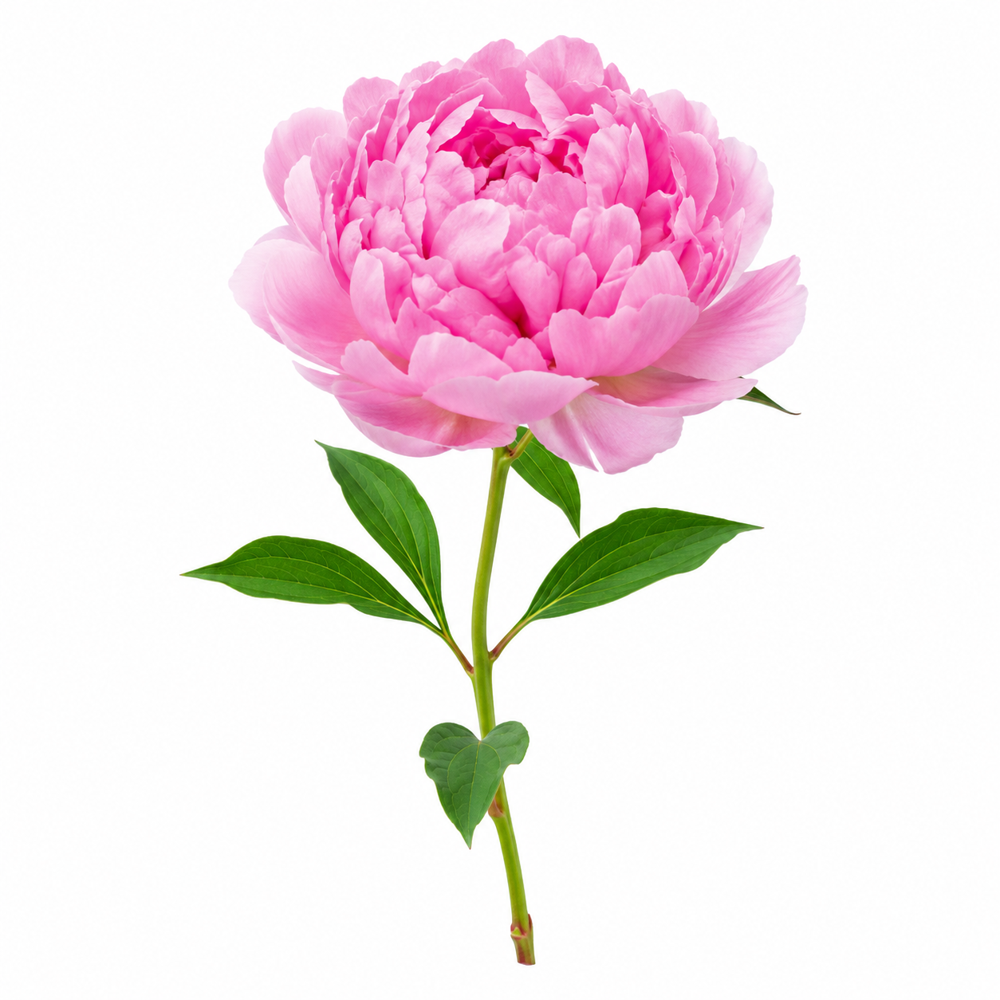
گلهای خاص و مناسبتی
گل صدتومانی صورتی
Peony
گل صدتومانی صورتی با گلبرگهای پر و ظاهر لوکس، برای هدیههای خاص، جشنها و دکوراسیون مناسب است. رنگ ملایم آن حس لطافت و زیبایی را منتقل میکند.
رنگ
صورتینوع محصول
گل طبیعیتعداد شاخه
7 شاخهمناسب برای
جشن و هدیه خاصافزودن محصول به سبد خرید در این پروژه بهصورت نمایشی است.
راهنمای نگهداری گل صدتومانی
مراقبت مناسب باعث بازشدن بهتر گلبرگهای صدتومانی میشود.
آب کافی
گلدان را همیشه دارای آب تمیز نگهداری کنید.
نور ملایم
گل را در نور روشن و غیرمستقیم قرار دهید.
دمای خنک
محیط خنک به ماندگاری گل کمک میکند.
حذف برگها
برگهای داخل آب را از ساقه جدا کنید.
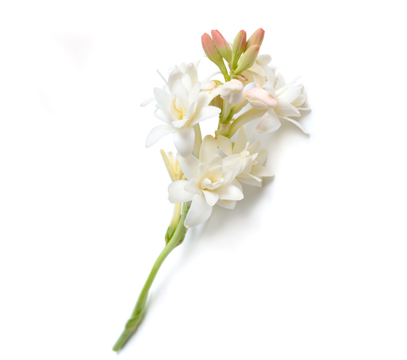
گلهای معطر
گل مریم سفید
Tuberose
گل مریم سفید بهدلیل عطر قوی و دلنشین خود، برای مراسم، دستهگل و تزئین منزل بسیار محبوب است. ظاهر ساده و سفید آن حس پاکی و آرامش را منتقل میکند.
رنگ
سفیدنوع محصول
گل معطرتعداد شاخه
10 شاخهمناسب برای
مراسم و منزلافزودن محصول به سبد خرید در این پروژه بهصورت نمایشی است.
راهنمای نگهداری گل مریم
مراقبت صحیح به حفظ عطر و تازگی گل مریم کمک میکند.
آب تازه
آب گلدان را هر روز یا یک روز در میان تعویض کنید.
برش ساقه
انتهای ساقه را کمی کوتاه کنید.
نور غیرمستقیم
گل را از نور شدید خورشید دور نگه دارید.
دمای خنک
محیط خنک به حفظ عطر گل کمک میکند.
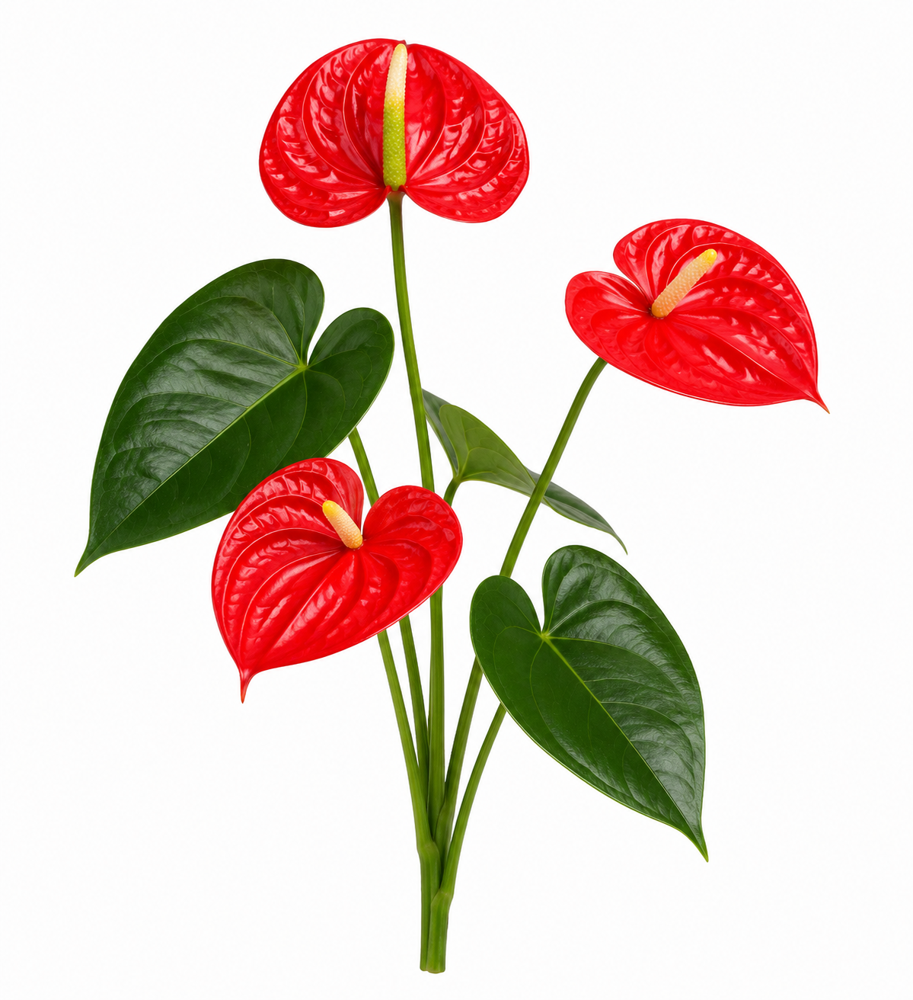
گلهای خاص و تزئینی
گل آنتوریوم قرمز
Anthurium
گل آنتوریوم قرمز با برگهای براق و فرم متفاوت، انتخابی خاص برای دکور منزل و محیط کار است. رنگ قرمز آن جلوهای گرم و چشمنواز به محیط میبخشد.
رنگ
قرمزنوع محصول
گل طبیعیتعداد شاخه
5 شاخهمناسب برای
دکور منزل و کارافزودن محصول به سبد خرید در این پروژه بهصورت نمایشی است.
راهنمای نگهداری گل آنتوریوم
آنتوریوم در محیط مناسب ماندگاری خوبی دارد.
نور غیرمستقیم
گل را از نور مستقیم خورشید دور نگه دارید.
رطوبت مناسب
رطوبت ملایم برای آنتوریوم مناسب است.
آب تمیز
آب گلدان را مرتب تعویض کنید.
دمای متعادل
از قرار دادن گل در سرمای شدید خودداری کنید.
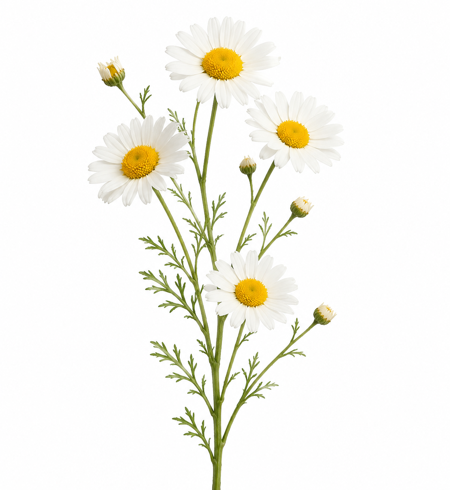
گلهای طبیعی و تزئینی
گل بابونه
Chamomile
گل بابونه با گلبرگهای سفید و مرکز زرد، ظاهری ساده و دوستداشتنی دارد. این گل برای دستهگلهای طبیعی، تزئین میز و ایجاد فضای صمیمی مناسب است.
رنگ
سفید و زردنوع محصول
گل طبیعیتعداد شاخه
20 شاخهمناسب برای
دستهگل و دکورافزودن محصول به سبد خرید در این پروژه بهصورت نمایشی است.
راهنمای نگهداری گل بابونه
گل بابونه با مراقبت ساده، تازگی خود را حفظ میکند.
آب تمیز
آب گلدان را بهطور مرتب تعویض کنید.
نور ملایم
گل را در نور روشن و غیرمستقیم قرار دهید.
دمای خنک
از قرار دادن گل در کنار وسایل گرمایشی خودداری کنید.
حذف گل خشک
گلهای خشکشده را از دسته جدا کنید.
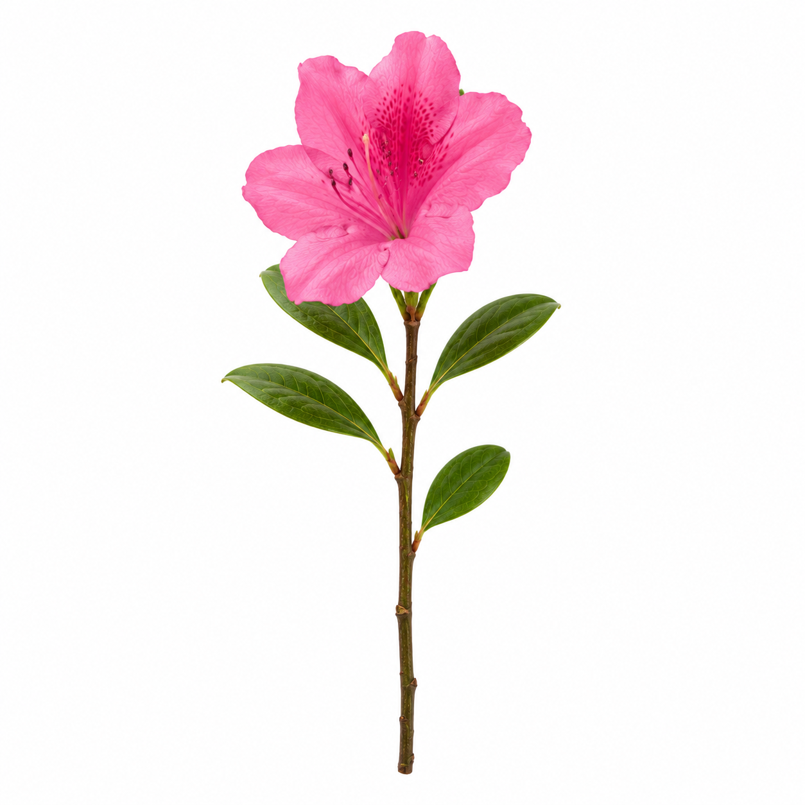
گلهای گلدانی و تزئینی
گل آزالیا صورتی
Azalea
گل آزالیا صورتی با گلهای فراوان و رنگ شاد، انتخابی زیبا برای دکور منزل، تراس و محیط کار است. این گل بهصورت گلدانی عرضه میشود و ظاهر پرگل و چشمنوازی دارد.
رنگ
صورتینوع محصول
گل گلدانیتعداد
یک گلدانمناسب برای
منزل و محل کارافزودن محصول به سبد خرید در این پروژه بهصورت نمایشی است.
راهنمای نگهداری گل آزالیا
آزالیا برای حفظ گلهای خود به مراقبت منظم نیاز دارد.
نور غیرمستقیم
گلدان را در محیط روشن و دور از نور مستقیم قرار دهید.
خاک مرطوب
خاک گلدان را مرطوب نگه دارید، اما غرقاب نکنید.
دمای خنک
آزالیا در محیط خنک بهتر گل میدهد.
حذف گل خشک
گلهای پژمرده را از گیاه جدا کنید.